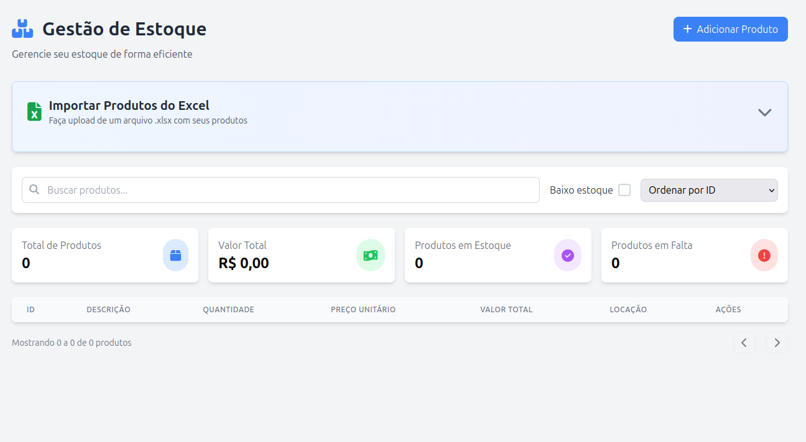
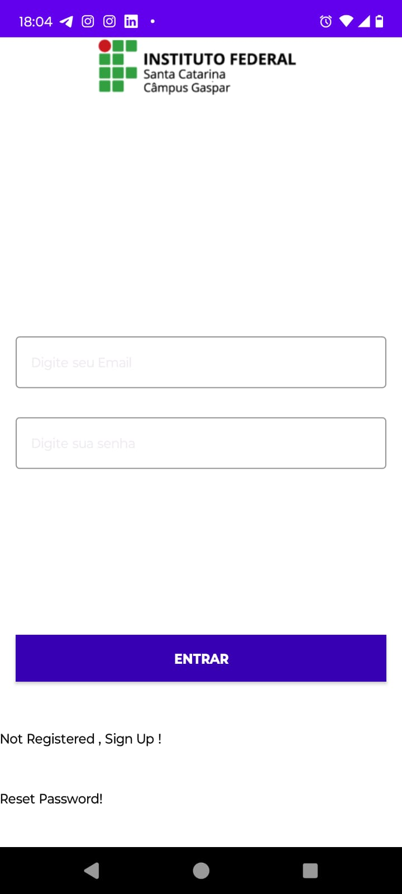
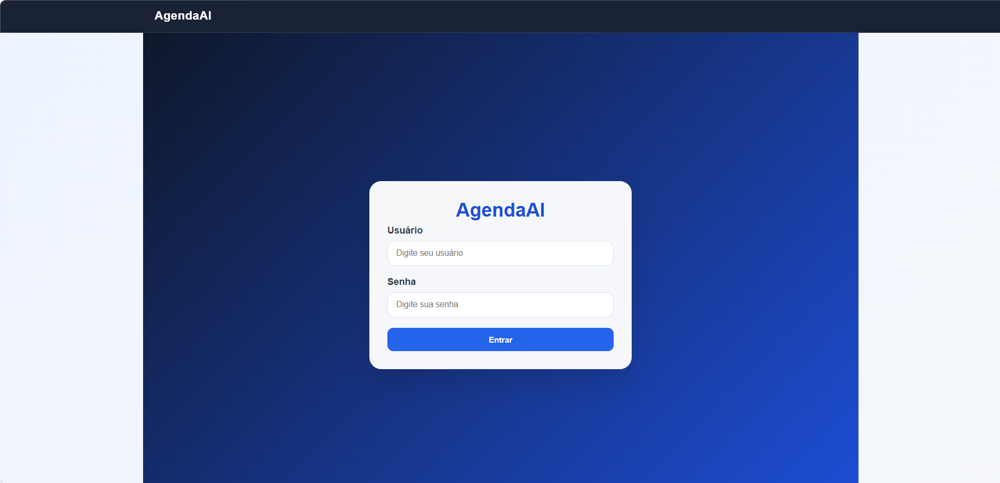

Meus projetos
Sistema de Restaurante
Gerenciamento para restaurantes com foco na otimização do fluxo de pedidos, mesas e cadastros. Desenvolvido com Spring Boot para uma API RESTful robusta e MySQL para persistência de dados.
Ver projetoSistema de Biblioteca
Aplicação web para gestão completa de acervo, empréstimos, devoluções e usuários. Desenvolvida com boas práticas de arquitetura de software e integração entre frontend e backend.
Ver projetoGerenciamento de Estoque
Sistema web com suporte à importação massiva de dados via arquivos Excel (XLSX). Construído com Java, Spring Boot, MySQL e interface responsiva.

Ver projetoReal Car & Service
Landing page institucional corporativa para apresentação de serviços mecânicos com integração direta para contato via WhatsApp e formulário web.
 Ver projeto
Ver projeto
IF-Eventos (IFSC Gaspar)
Aplicativo Android nativo em Kotlin para controle de presenças, tarefas e inscrições em eventos acadêmicos para alunos e servidores.

Ver projetoAgendaAI — Sistema de Agendamento
Aplicação web para organizar clientes, profissionais, serviços, horários e agendamentos em um só lugar. Desenvolvida com ReactJS, NextJS, TailwindCSS e TypeScript, utiliza localStorage para salvar os dados localmente no navegador.

Ver projeto